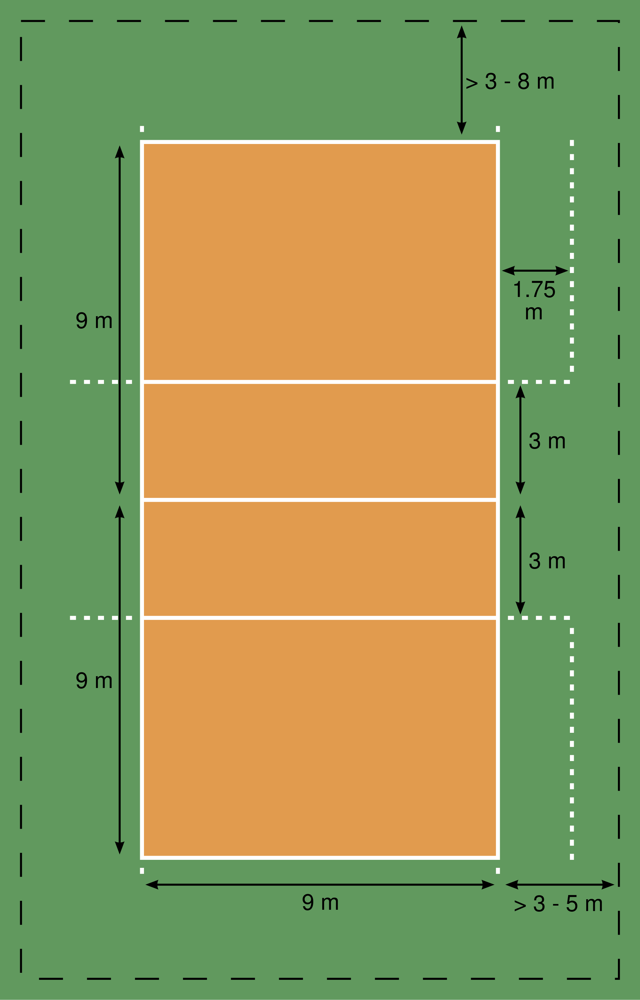
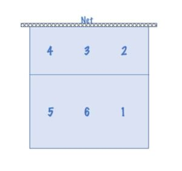

Introducing Volleyball
Volleyball is a popular team sport played on a rectangular court divided by a net. Two teams of six players try to send the ball over the net. The goal is to score by making the ball reach the ground on the opponent’s side of the court.
Court dimensions
The standard volleyball court is 18 meters long and 9 meters wide, divided into equal halves by a net. The net height varies for men and women.
Positions on the court
- Setter– directs the offense and sets the ball for hitters.
- Right side hitter– attacks from the right side and blocks the opponent’s outside hitter.
- Middle blocker– specializes in blocking and quick attacks near the net.
- Outside hitter– often the main attacker and plays both front and back row.
- Outside hitter/ defence specialist– focuses on receiving serves and digging attacks.
- Libero– defensive player wearing a contrasting jersey.